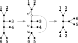
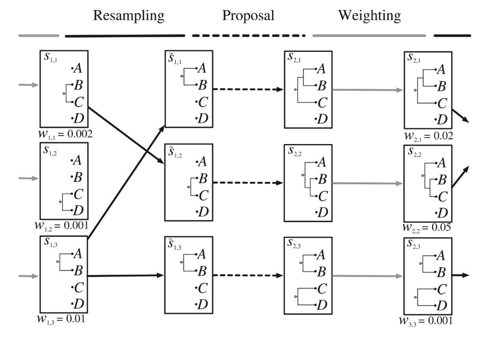
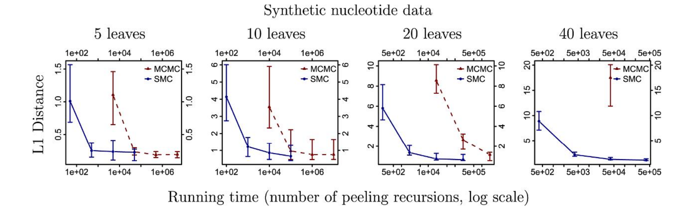
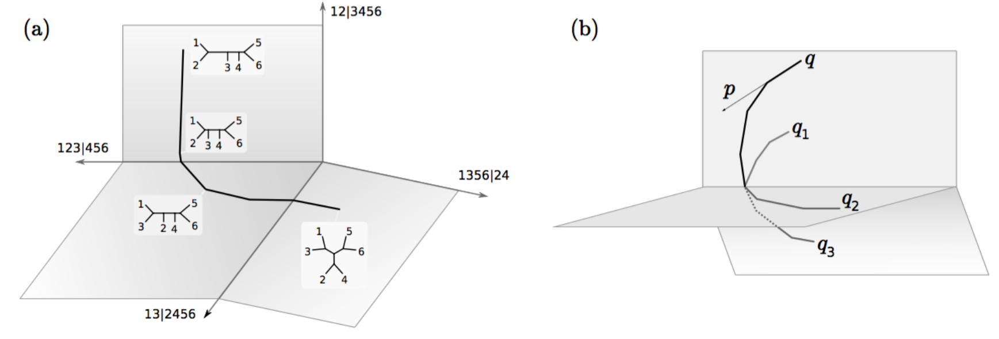

Bayesian phylogenetics
Alex Gavryushkin
March 20, 2017
Phylogenetic tree
Image source: Wikipedia
(Discrete) Time tree

Sampled ancestor tree

NNI graph
SPR graph
C. Whidden and E. Matsen. Calculating the unrooted Subtree Prune-and-Regraft distance. arXiv preprint arXiv:1511.07529 (2015).
Other phylogenetic graphs
- Lazy SPR
- Tree Bisection and Reconnection
- Subtree swapping
Main trade-off: local VS bold moves
“Random subtree swapping is too bold to compete successfully with the other moves”
Lakner et al. "Efficiency of Markov chain Monte Carlo tree proposals in Bayesian phylogenetics." Systematic biology 57.1 (2008): 86-103.
MCMC in a nutshell:
Drunk version of the greedy search
Lakner et al. "Efficiency of Markov chain Monte Carlo tree proposals in Bayesian phylogenetics." Systematic biology 57.1 (2008): 86-103.
[...]
Apparently, the exact shape of the posterior distribution was more important in determining the sampling difficulty of our data sets than factors such as tree size, number of characters, or number of trees in the credible set.
[...]
Lakner et al. "Efficiency of Markov chain Monte Carlo tree proposals in Bayesian phylogenetics." Systematic biology 57.1 (2008): 86-103.
My take
- There is no best tree proposal — every proposal alone is pretty bad
- When combined in a smart way, they can speed up convergence by orders of magnitude
- Although the simple rule "first bold then local" is generally applicable, careful tuning of proposals' weights speeds up convergence
- Combining and weighting proposals is still an art to a large extent, but a systematic approach is on the way:
G. Baele, P. Lemey, A. Rambaut, and M. Suchard. Adaptive MCMC in Bayesian Phylogenetics. Bioinformatics, 2017.
Why is this hard?

But lots of other things are many — trees have complicated geometry
Different geometries and approximate algorithm

Gavryushkin, Whidden, and Matsen. The Combinatorics of Discrete Time-Trees: Theory and Open Problems. Under review at Journal of Mathematical Biology. bioRxiv doi:10.1101/063362, 2016.
Why geometry matters?

[17] Gavryushkin and Drummond. The Space of Ultrametric Phylogenetic Trees. Journal of Theoretical Biology 403 (2016): 197–208.
[49] Whidden and Matsen. Quantifying MCMC Exploration of Phylogenetic Tree Space. Systematic Biology 64 (3): 472–91, 2015.
Geometry helps solving the semi-convergence problem
Conventional approach:
http://king2.scs.fsu.edu/CEBProjects/awty/awty_start.php
More recent approach:
https://github.com/danlwarren/RWTY
D. Warren, A. Geneva, and R. Lanfear. RWTY (R We There Yet): An R Package for Examining Convergence of Bayesian Phylogenetic Analyses. Molecular Biology and Evolution, 2017.
Other options: Sequential Monte Carlo
Running phylogenetic SMC (PosetSMC) requires:- Choice of proposal
- Requires an extension of the density on trees to a density on forests
- MCMC is generally defined as a metric, for SMC we need a richer structure of posets
A. Bouchard-Côté, S. Sankararaman, and M. Jordan. “Phylogenetic Inference via Sequential Monte Carlo.” Systematic Biology 61 (4), 579–93, 2012.
Other options: Sequential Monte Carlo
Differences between MCMC and SMC:- New partial states obtained from the proposal distribution are always “accepted”
- The weights of newly proposed states influence the chance each particle survives into the next iteration
- Once full states have been created by PosetSMC, the algorithm terminates
- PosetSMC is readily parallelized, simply by distributing particles across multiple processors
A. Bouchard-Côté, S. Sankararaman, and M. Jordan. “Phylogenetic Inference via Sequential Monte Carlo.” Systematic Biology 61 (4), 579–93, 2012.
Phylogenetic SMC (particle filtering)
A. Bouchard-Côté, S. Sankararaman, and M. Jordan. “Phylogenetic Inference via Sequential Monte Carlo.” Systematic Biology 61 (4), 579–93, 2012.
SMC versus MCMC running time
A. Bouchard-Côté, S. Sankararaman, and M. Jordan. “Phylogenetic Inference via Sequential Monte Carlo.” Systematic Biology 61 (4), 579–93, 2012.
Other options:
Hamiltonian Monte Carlo
- Use the idea of Hamiltonian dynamics to speed up the valley traversal
- Outperforms MCMC on (Euclidean) manifolds by up to two orders of magnitude
- Good for branch length inference (e.g. dating)
- Tuning-sensitive + many parameters to tune
- Few standard implementations
- No standard phylogenetic implementation
Phylogenetic HMC
V. Dinh, A. Bilge, C. Zhang, and E. Matsen. “Probabilistic Path Hamiltonian Monte Carlo.” arXiv [q-bio.PE], 2017, http://arxiv.org/abs/1702.07814